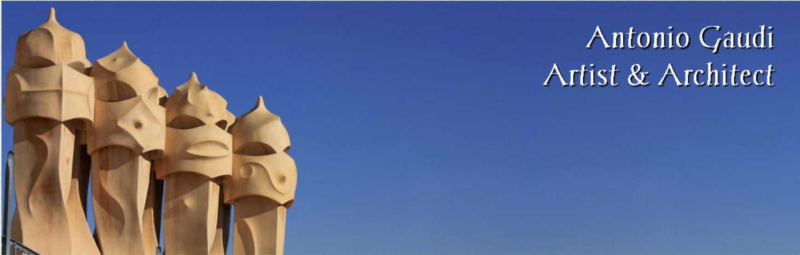
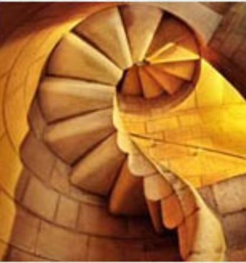
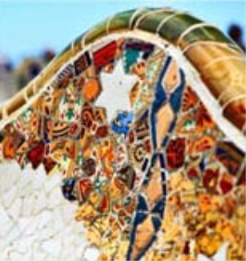
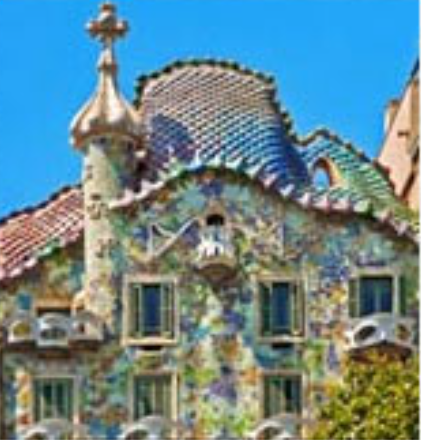
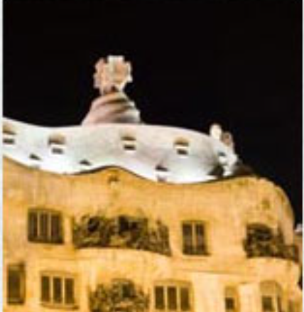

The voices of Barcelona blur in a mix of Spanish and Catalan in much the way Gaudí's work blurs the lines between architecture and artwork.
From the tiled benches in Güell Park to the towers over Casa Milà and Casa Batlló, I fell in love with Gaudí's work on my first trip to Barcelona.

The benches as Lizard fountain in Park Güell make up part of the UNESCO World Heritage Site know as, "The Works of Antonio Gaudí."
The park features Gaudí's famous Lizard Fountain, as well as benches and other extraordinary examples of Gaudí's talent with tiles.

The first time I strolled down the Passeig de Gràcia (Catalan for the Promenade of Grace), I stopped in my tracks in front of Gaudí's Casa Batlló.
The house, 'wedged' between two 'normal' buildings, looks more like a giant sculpture than any house I'd ever seen anywhere else.

A popular attraction in Barcelona, Casa Milà, also known as La Pedrera, is arguably one of the most famous buildings designed by Gaudí.
The roof features a collection of chimneys and towers that like they'd fit right in as characters in a Dr. Seuss book.